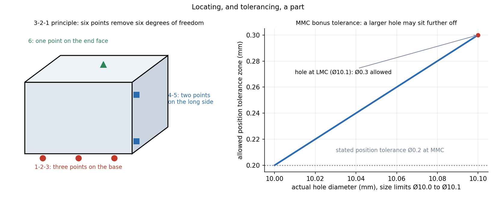

Jigs and Fixtures — The 3-2-1 Location Principle
A free rigid body has six degrees of freedom. A fixture removes them with the fewest, most repeatable contacts: 3 points on one plane, 2 on a second, 1 on a third: six point contacts, six constraints. Locators position the part, clamps hold it against the locators, and nothing else should touch.
Part of Manufacturing Technology - MOC. Previous: Tool Life and Machining Economics. Next: Metrology and GD&T - Form, Position and Gauging.
1. Jig and fixture
| Jig | Fixture | |
|---|---|---|
| Holds the part | yes | yes |
| Guides the tool | yes (drill bushings) | no (tool is set by a gauge block or a setting key) |
| Used on | drilling, reaming, tapping | milling, turning, grinding, welding, inspection |
Purpose: accuracy and interchangeability (every part located the same way), speed, safety, and lower skill needs.
2. The 3-2-1 principle
A rigid part has 3 translations and 3 rotations. Take three mutually perpendicular reference planes (datums):
| Datum | Contacts | Degrees of freedom removed |
|---|---|---|
| Primary (the base, the largest, most stable face) | 3 points, forming a triangle as large as possible | 1 translation (normal) + 2 rotations |
| Secondary (a long side) | 2 points, as far apart as possible | 1 translation + 1 rotation (about the primary normal) |
| Tertiary (an end face) | 1 point | the last translation |
Total constraints. Each locator is a point contact (pad, pin, button).

Rules.
- Never over-constrain: a fourth point on the primary plane makes the part rock on a rough surface, so locators are fixed in position and the part is held by clamps. Use a fourth, adjustable or floating support only to prevent deflection under load.
- Use the datum of the drawing: locate on the faces from which the dimensions are measured, to avoid tolerance stack-up.
- Locating on holes: one round pin (removes 2 translations), one diamond (relieved) pin (removes 1 rotation) in a second hole, a plane as the primary: it removes 3+2+1 with a pair of holes and avoids the hole-spacing error.
- V-block for round parts (centres the axis, removes 4 DOF).
3. Clamping
Clamps do not locate: they press the part onto the locators against the cutting forces. Rules:
- The clamp force acts toward the locators (so that the locators carry the reaction, not the clamp).
- Cutting forces should push the part against the locators, not off them.
- Clamp over a support to avoid bending the part.
- Clamping must be strong but not distort a thin part.
Estimate. If the cutting force is resisted only by friction ( at the locators/clamp), the required clamp force is
Orienting a locator against the cutting force removes the need for friction: the clamp then only needs to keep the part in contact, perhaps a tenth as much.
4. Design checklist
Pick datums from the drawing, choose the locator layout (3-2-1), decide the clamping direction and forces, ensure loading and unloading access and chip clearance, add error-proofing (a part can only fit one way), and select materials (hardened steel locators) and tolerances (the fixture should be about 30–50 % of the part's tolerance).
- Putting all three primary points in a line: they remove only 2 degrees of freedom (the part tips about the line).
- Using four fixed locators on one plane: the part rocks.
- Clamping on an unsupported overhang: the part bends and springs back when released.
- Locating on a rough cast surface with a pad (not a point): use buttons or adjustable screws.
- Letting the cutting force overcome the friction clamp.
Predict first: a flat plate sits on a table with three points, and is pushed sideways by a drill. How many more locators does it need, and where?
Two on one side edge (secondary datum) and one on an end (tertiary): . The drill force should push the part against the two-point datum.
Why must the two secondary points be far apart?
They set the rotation about the primary normal; the angular error equals the positioning error divided by the separation, so the wider apart they are, the smaller the angle error. The same reasoning for the three primary points: use the biggest triangle.
5. Connections
- Mobility - Kutzbach Equation and Exceptions — degrees-of-freedom counting: for a spatial rigid body, for a planar one.
- Kinematic Pairs, Links and Chains — each point contact removes one degree of freedom, a higher pair.
- Free-Body Diagrams and Equilibrium of Rigid Bodies — locators and clamps provide the six reaction components that hold the part against cutting forces.
- Metrology and GD&T - Form, Position and Gauging — datums and datum reference frames are the same 3-2-1 idea.